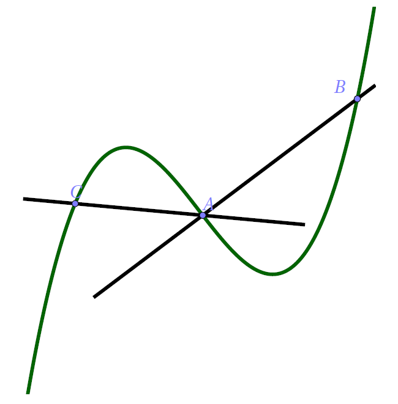

Convexité
Première approche
Une sécante, une corde
Soit \(f\) une fonction et \(\mathcal{C}_f\) sa courbe représentative dans un repère. Soient \(A\) et \(B\) deux points distincts de \(\mathcal{C}_f\), la droite \((AB)\) est appelée sécante de \(\mathcal{C}_f\). Par ailleurs, le segement \([AB]\) est appelé corde \([AB]\).

Deux sécantes : (AB) et (AC)
On remarque
Convexe
Soit une fonction et \(\mathcal{C}_f\) sa courbe représentative dans un repère. On dit que \(f\) est convexe sur un intervalle \(I\) si \(\mathcal{C}_f\) est en dessous de toutes ses sécantes entre les deux points d'intersection, c'est-à-dire en dessous des cordes associées.
Une fonction convexe sur son domaine
Concave
Soit une fonction et \(\mathcal{C}_f\) sa courbe représentative dans un repère. On dit que \(f\) est concave sur un intervalle \(I\) si pour tout réel \(x\) de \(I\), \(\mathcal{C}_f\) est au-dessus de chacune de ses sécantes entre les deux points d'intersection.
Une fonction concave sur son domaine
Attention
Il faut toujours préciser l'intervalle sur lequel une fonction est convexe (ou concave) !
Attention
Une fonction qui n'est pas convexe sur un intervalle \(I\) n'est pas une fonction concave sur \(I\) !! Comme pour le sens de variations, il faudra le plus souvent décrire la convexité d'une fonction.
Par exemple, une fonction est convexe sur \([-5;2]\), concave sur \([2;10]\) et convexe sur \([10; + \infty[\).
Une fonction quelconque
Cette fonction est au-dessous de ses sécantes sur \([1; +\infty[\) ! Elle est convexe sur \([1; +\infty[\) (pas encore démontré).
Une définition presque inutilisable
Il est plutôt compliqué de démontrer qu'une courbe est au-dessous au-dessus de toutes ses sécantes sur un intervalle. Aussi, ne cherchez pas à le faire !
Les théorèmes ci-dessous sont beaucoup plus simples d'utilisation.
L'étude de la convexité d'une fonction permet (entre autre) d'affiner la compréhension de son comportement : cela permet de savoir si la croissance « accélère » ou « ralentit ».
Convexité et dérivation
Convexe et dérivation
Soit \(f\) une fonction définie et deux fois dérivable sur un intervalle I.
- \(f\) est convexe sur \(I\) équivaut à \(f'\) est croissante sur \(I\).
- \(f\) est convexe sur \(I\) équivaut à \(f''\) est positive sur \(I\).
- \(f\) est convexe sur \(I\) équivaut à \(\mathcal{C}_f\) est au-dessus de ses tangentes sur \(I\).
Concave et dérivation
Soit \(f\) une fonction définie et deux fois dérivable sur un intervalle I.
- \(f\) est concave sur \(I\) équivaut à \(f'\) est décroissante sur \(I\).
- \(f\) est concave sur \(I\) équivaut à \(f''\) est négative sur \(I\).
- \(f\) est concave sur \(I\) équivaut à \(\mathcal{C}_f\) est au-dessous de ses tangentes sur \(I\).
tangente et convextié
Avec la convexité (resp. concavité), la position relative entre une courbe et ses tangentes n'est connue que sur l'intervalle où la fonction est convexe (resp. concave).
Courbe et tangente
Cette fonction est convexe sur \([1; +\infty[\). Elle est au-dessus de ses tangentes uniquement sur \([1; +\infty[\) ! On remarque que la courbe passe en dessous de la tangente tracée un peu plus loin sur \(]-\infty; 1]\).
Point d'inflexion
Il est intéressant de trouver le moment où se produit le changement de convexité. D'où la définition :
Point d'inflexion
Un point d'inflexion est un point où la courbe représentative d'une fonction traverse sa tangente.
Caractérisation d'un point d'inflexion
Soit \(f\) une fonction définie sur un intervalle \(I\) et \(a\) un réel de \(I\).
- Le point \(A(a;f(a))\) est un point d'inflexion de \(\mathcal{C}_f\) si et seulement si la convexité de \(f\) change en \(a\).
- Si de plus \(f\) est deux fois dérivable sur \(I\), alors le point \(A(a;f(a))\) est un point d'inflexion si et seulement \(f''\) s'annule et change de signe en \(a\).
Astuce
Il est évident que, pour trouver un point d'inflexion, le plus simple est d'étudier le signe de \(f''\) !
Attention
La seule résolution de \(f''(x) = 0\) ne permet pas de conclure ! Il faut en plus savoir si la dérivée seconde change de signe !